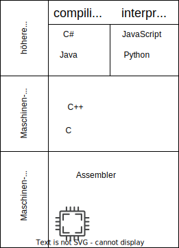
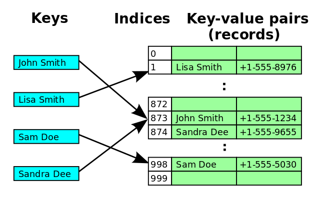

- Computer Grundlagen II: Datenkodierung
- Python Grundlagen II: Datenstrukturen
- Projekt 2: CSV & JSON
- Python Grundlagen III: venv, pip und Bibliotheken
- Projekt 3: Web-APIs und Spreadsheets
- Quellen zum Selbststudium
Kurs 23720
Thomas Irgang
Erste Schritte mit Python
Kurs 23720
Thomas Irgang
Erste Schritte mit Python
Inhalte
Erste Schritte mit Python
- Tag 1: Grundlagen und erste Schritte
- Tag 2: Daten und Bibliotheken
- Tag 3: Programmfluss und Funktionen
- Tag 4: Klassen und Programme
Tag 2
Erste Schritte mit Python
Computer Grundlagen
Erste Schritte mit Python
- Datenkodierung
Binäre Daten
Datenkodierung
- Computer kennen nur 0 und 1
- Nachricht (Syntax): Folge von 0en und 1en
- Information (Semantik): Bedeutung der Nachricht

Graph+sas, CC BY-SA 4.0 , via Wikimedia Commons
Dualsystem (Binärsystem)
Datenkodierung
- Wertigkeit der Stellen: $2^i$
- $101_2 $
$= 1 * 4 + 0 * 2 + 1 * 1 $
$= 5_{10}$

User000name, CC BY-SA 4.0 , via Wikimedia Commons

User000name, CC BY-SA 4.0 , via Wikimedia Commons
Hexadezimalsystem
Datenkodierung
- Wertigkeit der Stellen: $16^i$
- $10_{16} = 1 * 16 + 0 * 1 = 16_{10}$
- $AF_{16} $
$= 10 * 16 + 15 * 1 $
$= 175_{10}$

Hr.hanafi, CC BY-SA 3.0 , via Wikimedia Commons
User000name, CC BY-SA 4.0 , via Wikimedia Commons
Binär in Hex
Datenkodierung
- maximaler Wert einer 4-stelligen Binärzahl:
$8+4+2+1=15$ - maximaler Wert einer 1-stelligen Hexadezimalzahl:
$F_{16} = 15$ - 4 Zeichen binär $XXXX_2$
= 1 Zeichen hexadezimal
Binär in Hex
Datenkodierung
- Binär-Daten lassen sich kompakt Hexadezimal darstellen
- $1100_{2}=12_{10}=A_{16}$
- $1100 0101_{2}$ = 1100 0101 = $A5_{16}$
- 1 Byte = 8 Bit
$XX_{16}$ = $XXXX.XXXX_{2}$
X-Bit Systeme
Datenkodierung
- X-Bit entspricht der Größe der CPU Register
- Microcontroller: 8-Bit (1 Byte) / 16-Bit
Heutige PCs: 64bit (alte PCs: 32bit) - X-Bit ist die Speicherbandbreite
32bit = max. 4GB RAM
64bit = max. 16 Exabyte (16 Milliarden Gigabyte) RAM
Zweierkomplement
Datenkodierung
- Zahlenraum:
$-2^{n-1}, ... , 0, ... -2^{n-1}$ - 8bit: -127...127
- 32bit: -2.147.483.648 ... 2.147.483.648
- Negative Zahlen: Binärwert invertieren und 1 addieren
- 4 = 0000 0100
invertiert: 1111 1011
1 addieren: 1111 1100 = -4
Grenzen der Darstellung
Datenkodierung
- Grenzen der Darstellung können zu Problemen führen
- Reddit: Reddit-Kommentare laufen bei 32-Bit über
- Google: l+f: Integer-Überlauf Gangnam-Style


Gleitkommazahlen
Datenkodierung
- Gleitkommazahlen müssen als Binärmuster darstellt werden
- IEEE 754: $x=$$s$$2^e$$m$
Vorzeichen s (1 bit), Exponent e, Mantisse m
negative Exponenten: Biaswert wird addiert - 32 Bit Darstellung: 3.14
=0 2^1 1.5700000524520874
= 0 1000.0000 10.0100.0111.1010.1110.00010 - Dargestellte Zahl: 3.1399998664855957031250000
Textdarstellung
Datenkodierung
- Kodierung pro Zeichen
- einfachste Kodierung: ASCII
ein Zeichen pro Byte, sehr kleiner Zeichenraum - aktueller Standard: UTF8
variable Zeichenlänge, (fast) alle Zeichen darstellbar
Textdarstellung
Datenkodierung
- Text: Hallo, Welt!
ASCII: 48 61 6c 6c 6f 2c 20 57 65 6c 74 21
UTF-8: 48 61 6c 6c 6f 2c 20 57 65 6c 74 21
UTF-16: 0048 0061 006c 006c 006f 002c 0020 0057 0065 006c 0074 0021 - Zeichen 😊
ASCII: Nicht darstellbar
UTF-8: F0 9F 98 8A
UTF-16: D83D DE0A
Tag 2
Erste Schritte mit Python
- Computer Grundlagen II: Datenkodierung
- Python Grundlagen II: Datenstrukturen
- Projekt 2: CSV & JSON
- Python Grundlagen III: venv, pip und Bibliotheken
- Projekt 3: Web-APIs und Spreadsheets
- Quellen zum Selbststudium
Programmiersprachen
Python Grundlagen
- Python ist eine:
- höhere Sprache
- interpretierte Sprache

Blöcke
Python Grundlagen
- Python verwendet Einrückung um Blöcke zu bilden
- Viele andere Sprachen: { }
>>> for i in range(1,10):
... print(i)
...
Zahlen
Python Grundlagen
- Datentypen:
- Ganzzahl: int
- Dezimalzahl: float
- Komplexe Zahl: complex
- Built-in Types
- Python 3: int is unbeschränkt
Python 3.10.6
>>> import sys
>>> sys.float_info
sys.float_info(
max=1.7976931348623157e+308, ...
min=2.2250738585072014e-308, ...)
>>> a = 5
>>> type(a)
<class 'int'>
>>> b = 3.14
>>> type(b)
<class 'float'>
>>> z = complex(3,4)
>>> type(z)
<class 'complex'>
>>> z.real
3.0
>>> z.imag
4.0
Python 2.7.18
>>> import sys
>>> sys.maxint
9223372036854775807
Wikipedia: Feld (Array)
Python Grundlagen
Ein Feld (englisch [...] array [...]) ist in der Informatik eine Datenstruktur-Variante, mit deren Verwendung „viele gleichartig strukturierte Daten [...] verarbeitet werden sollen“. Der Zugriff auf bestimmte Inhalte eines Felds erfolgt mit Hilfe von Indizes, die dessen Position bezeichnen.
Wikipedia: verkettete Liste
Python Grundlagen
Eine verkettete Liste ist eine dynamische Datenstruktur, in der Datenelemente geordnet gespeichert sind. Bei ihrer Erstellung braucht die maximale Anzahl der Elemente nicht festgelegt zu werden, und die Anzahl darf während der Laufzeit beliebig variieren.
Listen
Python Grundlagen
- Höhere Datenstruktur
- Kann verschiedene Werte aufnehmen
- Kann über Index zugegriffen werden
- Neue Elemente können angehängt werden
- Dokumentation
>>> list = [5, 3, "Hallo"]
>>> list
[5, 3, 'Hallo']
>>> list[0]
5
>>> list[2]
'Hallo'
>>> list.append(3)
>>> list
[5, 3, 'Hallo', 3]
Tuple
Python Grundlagen
- Höhere Datenstruktur
- Kann verschiedene Werte aufnehmen
- Kann über Index zugegriffen werden
- Feste Länge
- Unterstützt "unpacking"
- Dokumentation
>>> tuple = (1, 3, "Welt")
>>> tuple
(1, 3, 'Welt')
>>> tuple[2]
'Welt'
>>> x, y, z = tuple
>>> x
1
>>> y
3
>>> z
'Welt'
Wikipedia: Hashfunktion
Python Grundlagen
Eine Hashfunktion [...] ist eine Abbildung, die eine große Eingabemenge, die Schlüssel, auf eine kleinere Zielmenge, die Hashwerte, abbildet. Eine Hashfunktion ist daher im Allgemeinen nicht injektiv.
.svg)
Jorge Stolfi, Public domain, via Wikimedia Commons
Wikipedia: Hashtabelle
Python Grundlagen
In der Informatik bezeichnet man eine spezielle Indexstruktur als Hashtabelle (englisch hash table oder hash map) [...]. Sie wird verwendet, um Datenelemente in einer großen Datenmenge zu suchen bzw. aufzufinden [...].

Public domain, via Wikimedia Commons
Dict(ionary)
Python Grundlagen
- Hashtabelle
- Kann über Schlüssel zugegriffen werden
- Dokumentation
>>> dict = {}
>>> type(dict)
>>> dict['Hallo'] = 'Welt'
>>> dict
{'Hallo': 'Welt'}
Set (Menge)
Python Grundlagen
- Menge
- Kann jedes Element nur einmal enthalten
- Dokumentation
>>> list
[5, 3, 'Hallo', 3]
>>> set = set(list)
>>> set
{'Hallo', 3, 5}
Tag 2
Erste Schritte mit Python
- Computer Grundlagen II: Datenkodierung
- Python Grundlagen II: Datenstrukturen
- Projekt 2: CSV & JSON
- Python Grundlagen III: venv, pip und Bibliotheken
- Projekt 3: Web-APIs und Spreadsheets
- Quellen zum Selbststudium
Aufgabe
Projekt 2: CSV & JSON
- Teil 1: DWD Warnzellen CSV
dwd.de https://t.ly/-ajyu - Teil 2: Open Power System Data Wetter Daten CSV
open-power-system-data.org https://t.ly/IbeO - Teil 3: Data USA Bevölkerung JSON
datausa.io https://t.ly/8Py-

A.Spielhoff, CC0, via Wikimedia Commons
www.python.org, GPL , via Wikimedia Commons
Dateien lesen
Projekt 2: CSV & JSON
- with open(DATEI, MODUS) as f
Python Dokumentation
>>> with open('cap_warncellids_csv.csv', 'r') as f:
... print(f.readline())
...
# WARNCELLID;NAME;KENNUNG (NUTS);KURZNAME;KENNUNG (SIGN)

A.Spielhoff, CC0, via Wikimedia Commons
www.python.org, GPL , via Wikimedia Commons
csv
Projekt 2: CSV & JSON
- csv
Python Dokumentation - Bibliotheken für CVS Daten
>>> import csv
>>> with open('cap_warncellids_csv.csv', newline='') as csvfile:
... reader = csv.reader(csvfile, delimiter=';', quotechar='"')
... for row in reader:
... print(row)
...
['\ufeff# WARNCELLID', 'NAME', 'KENNUNG (NUTS)', 'KURZNAME', 'KENNUNG (SIGN)']
['101001000', 'Stadt Flensburg', 'DEF01', 'Flensburg', 'FLX']
['101002000', 'Stadt Kiel', 'DEF02', 'Kiel', 'KIX']
A.Spielhoff, CC0, via Wikimedia Commons
www.python.org, GPL , via Wikimedia Commons
if
Projekt 2: CSV & JSON
- Bedingte Verzweigung: if
Python Dokumentation
>>> Namen = ['Paul', 'Peter', 'Gustav']
>>> for name in Namen:
... if name == 'Paul':
... print('Paul wurde gefunden!')
... elif 'P' in name:
... print('Gefunden:', name)
... else:
... print('Nicht gefunden:', name)
...
Paul wurde gefunden!
Gefunden: Peter
Nicht gefunden: Gustav
A.Spielhoff, CC0, via Wikimedia Commons
www.python.org, GPL , via Wikimedia Commons
Aufgabe
Projekt 2: CSV & JSON
- Teil 1: DWD Warnzellen CSV
dwd.de https://t.ly/-ajyu
Schreibe ein Python Programm das aus die Warnzellen ID von Roth ausgibt.
A.Spielhoff, CC0, via Wikimedia Commons
www.python.org, GPL , via Wikimedia Commons
Gruppenarbeit
Projekt 2: CSV & JSON

A.Spielhoff, CC0, via Wikimedia Commons

A.Spielhoff, CC0, via Wikimedia Commons
Lösung
Projekt 2: CSV & JSON
import csv
with open('cap_warncellids_csv.csv', newline='') as csvfile:
reader = csv.reader(csvfile, delimiter=';', quotechar='"')
for row in reader:
if row[3] == 'Roth':
print(f'{row[1]}: {row[0]}')
> python teil1.py
Kreis Roth: 109576000
Stadt Roth: 809576143

A.Spielhoff, CC0, via Wikimedia Commons
www.python.org, GPL , via Wikimedia Commons
Aufgabe
Projekt 2: CSV & JSON
- Teil 1: DWD Warnzellen CSV
dwd.de https://t.ly/-ajyu - Teil 2: Open Power System Data Wetter Daten CSV
open-power-system-data.org https://t.ly/IbeO - Teil 3: Data USA Bevölkerung JSON
datausa.io https://t.ly/8Py-
A.Spielhoff, CC0, via Wikimedia Commons
www.python.org, GPL , via Wikimedia Commons
enumerate
Projekt 2: CSV & JSON
- enumerate "nummeriert" Listen
Python Dokumentation
>>> Namen = ['Paul', 'Peter', 'Gustav']
>>> for i, name in enumerate(Namen):
... print(i, name)
...
0 Paul
1 Peter
2 Gustav
A.Spielhoff, CC0, via Wikimedia Commons
www.python.org, GPL , via Wikimedia Commons
Listen slicing
Projekt 2: CSV & JSON
- Python kann "list slicing"
Python Dokumentation
>>> liste = [1,2,3,4,5,6,7,8,9]
>>> liste[:5]
[1, 2, 3, 4, 5]
>>> liste[5:]
[6, 7, 8, 9]
>>> liste[1:6:2]
[2, 4, 6]
>>> liste[::2]
[1, 3, 5, 7, 9]
A.Spielhoff, CC0, via Wikimedia Commons
www.python.org, GPL , via Wikimedia Commons
Aufgabe
Projekt 2: CSV & JSON
- Teil 2: Open Power System Data Wetter Daten CSV
open-power-system-data.org https://t.ly/IbeO
Stelle einen Temperaturwert von Deutschland (Spalte DE_temperature) für den 1.1. jedes Jahres graphisch dar. - Hinweis: Jeder 8760te Wert
A.Spielhoff, CC0, via Wikimedia Commons
www.python.org, GPL , via Wikimedia Commons
Gruppenarbeit
Projekt 2: CSV & JSON
A.Spielhoff, CC0, via Wikimedia Commons
A.Spielhoff, CC0, via Wikimedia Commons
Lösung
Projekt 2: CSV & JSON
import csv
import matplotlib.pyplot as plt
with open('weather_data.csv', 'r') as csvfile:
reader = csv.reader(csvfile, delimiter=',', quotechar='"')
spalten = reader.__next__()
# Finde Spalten-Nr
index = None
for i, titel in enumerate(spalten):
if titel == 'DE_temperature':
index = i
print("Die Daten sind in Spalte", index)
# Extrahiere Daten
zeit = []
temp = []
for row in reader:
zeit.append(row[0][:4])
temp.append(float(row[index]))
print("Die Daten sind extrahiert.")
...
A.Spielhoff, CC0, via Wikimedia Commons
www.python.org, GPL , via Wikimedia Commons
Lösung
Projekt 2: CSV & JSON
...
# Daten Darstellen
fig, ax = plt.subplots()
ax.plot(zeit[::8760], temp[::8760])
plt.show()
A.Spielhoff, CC0, via Wikimedia Commons
www.python.org, GPL , via Wikimedia Commons
Aufgabe
Projekt 2: CSV & JSON
- Teil 1: DWD Warnzellen CSV
dwd.de https://t.ly/-ajyu - Teil 2: Open Power System Data Wetter Daten CSV
open-power-system-data.org https://t.ly/IbeO - Teil 3: Data USA Bevölkerung JSON
datausa.io https://t.ly/8Py-
A.Spielhoff, CC0, via Wikimedia Commons
www.python.org, GPL , via Wikimedia Commons
Tag 2
Erste Schritte mit Python
- Computer Grundlagen II: Datenkodierung
- Python Grundlagen II: Datenstrukturen
- Projekt 2: CSV & JSON
- Python Grundlagen III: venv, pip und Bibliotheken
- Projekt 3: Web-APIs und Spreadsheets
- Quellen zum Selbststudium
Tag 2
Erste Schritte mit Python
- Computer Grundlagen II: Datenkodierung
- Python Grundlagen II: Datenstrukturen
- Projekt 2: CSV & JSON
- Python Grundlagen III: venv, pip und Bibliotheken
- Projekt 3: Web-APIs und Spreadsheets
- Quellen zum Selbststudium
Tag 2
Erste Schritte mit Python
- Computer Grundlagen II: Datenkodierung
- Python Grundlagen II: Datenstrukturen
- Projekt 2: CSV & JSON
- Python Grundlagen III: venv, pip und Bibliotheken
- Projekt 3: Web-APIs und Spreadsheets
- Quellen zum Selbststudium
Quellen zum Selbststudium (Deutsch)
Erste Schritte mit Python
- YouTube Video Reihe:
https://www.youtube.com/@Gravitar - https://www.python-kurs.eu/python3_kurs.php
- https://www.python-lernen.de/
- https://www.python-forum.de/
- Buch: Python von Kopf bis Fuß: Aktuell zu Python 3

Youtube, A beautiful Code in Python

python-kurs.eu

python-lernen.de

python-forum.de
Quellen zum Selbststudium (Englisch)
Erste Schritte mit Python
- The Python Tutorial
- The Hitchhiker's Guide to Python
- https://www.python-lernen.de/
- Buch: Introducing Python: Modern Computing in Simple Packages
The Python Tutorial

The Hitchhiker's Guide to Python
Erste Schritte mit Python

Per A.J. Andersson, CC BY-SA 4.0 , via Wikimedia Commons